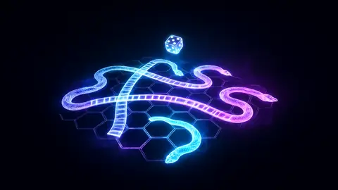
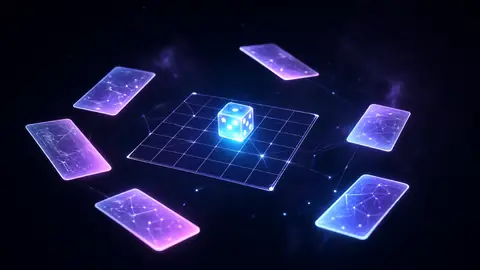

2:16Т-игра · 4 часа · до 4 игроковИгра «Лила» с Мариной
Авторская версия для бизнеса и жизненных ситуаций.
3 500 ₽Записаться
Упрощённая онлайн-версия трансформационной игры: 36 клеток, кубик, змеи и стрелы. Сформулируйте запрос, бросайте кубик и отвечайте на вопросы клеток. Полная «Лила» (72 клетки, 4 часа, до 4 игроков) проходит вживую с Мариной.
Названия и описания клеток созданы для этой мини-версии и не повторяют классическое поле. История и правила классической «Лилы» →

2:16Т-игра · 4 часа · до 4 игроковАвторская версия для бизнеса и жизненных ситуаций.

2:25Игры, метафоры, смыслы · 2 минИгра «Лила»: история и правилаДревняя индийская игра знания, предок «Змей и лестниц» и современный инструмент самоисследования. Что о ней известно точно.✓ прочитано2:40Игры, метафоры, смыслы · 2 мин72 клетки Лилы: планы, змеи и стрелыКак устроено поле «Лилы»: восемь рядов-планов, символика змей и стрел и как читать свой путь по игре.✓ прочитаноСтоимость: · Ближайшая дата:
Напишите Марине — она пришлёт детали для оплаты.
Текст сообщения (подставится в Telegram и скопируется):
Все сессии проходят онлайн и вживую — с Мариной Степановой. Группы до 8 человек.
Бесплатный тест: 8 ситуаций → персональный разбор и следующий шаг.
Пройти тест